| User ID | Vehicle Model | Battery Capacity (kWh) | Charging Station ID | Charging Station Location | Charging Start Time | Charging End Time | Energy Consumed (kWh) | Charging Duration (hours) | Charging Rate (kW) | Charging Cost (USD) | Time of Day | Day of Week | State of Charge (Start %) | State of Charge (End %) | Distance Driven (since last charge) (km) | Temperature (°C) | Vehicle Age (years) | Charger Type | User Type | |
|---|---|---|---|---|---|---|---|---|---|---|---|---|---|---|---|---|---|---|---|---|
| 0 | User_1 | BMW i3 | 108.463007 | Station_391 | Houston | 1/1/2024 0:00 | 1/1/2024 0:39 | 60.712346 | 0.591363 | 36.389181 | 13.087717 | Evening | Tuesday | 29.371576 | 86.119962 | 293.602111 | 27.947953 | 2.0 | DC Fast Charger | Commuter |
| 1 | User_2 | Hyundai Kona | 100.000000 | Station_428 | San Francisco | 1/1/2024 1:00 | 1/1/2024 3:01 | 12.339275 | 3.133652 | 30.677735 | 21.128448 | Morning | Monday | 10.115778 | 84.664344 | 112.112804 | 14.311026 | 3.0 | Level 1 | Casual Driver |
| 2 | User_3 | Chevy Bolt | 75.000000 | Station_181 | San Francisco | 1/1/2024 2:00 | 1/1/2024 4:48 | 19.128876 | 2.452653 | 27.513593 | 35.667270 | Morning | Thursday | 6.854604 | 69.917615 | 71.799253 | 21.002002 | 2.0 | Level 2 | Commuter |
| 3 | User_4 | Hyundai Kona | 50.000000 | Station_327 | Houston | 1/1/2024 3:00 | 1/1/2024 6:42 | 79.457824 | 1.266431 | 32.882870 | 13.036239 | Evening | Saturday | 83.120003 | 99.624328 | 199.577785 | 38.316313 | 1.0 | Level 1 | Long-Distance Traveler |
| 4 | User_5 | Hyundai Kona | 50.000000 | Station_108 | Los Angeles | 1/1/2024 4:00 | 1/1/2024 5:46 | 19.629104 | 2.019765 | 10.215712 | 10.161471 | Morning | Saturday | 54.258950 | 63.743786 | 203.661847 | -7.834199 | 1.0 | Level 1 | Long-Distance Traveler |
EV Charging Trends and Predictions
INFO 511 - Fall 2024 - Final Project
This project explores trends in electric vehicle (EV) charging efficiency and builds predictive models to understand charging behaviors.
Team ChilePeppers INFO511 Term Project
Electric Vehicle (EV) Charging Dataset Assessment
Introduction and Data
The ChilePeppers team completed an assessment of the electric vehicle (EV) charging dataset for the INFO511 term project. The dataset was selected out of an interest to explore the evolving EV technical space and build a predictive model for charging efficiency improvements. The dataset consisted of 1320 rows and 20 columns, see Tables 1 and 2. The dataset provided charging history and profile for five electric vehicles; BMW i3, Hyundai Kona, Chevy Bolt, Nissan Leaf, and the Tesla Model 3, see Table 1. Each row in the dataset is a vehicle type with a record of a charge including location, energy consumed, charge duration, charging cost, temperature, vehicle age, charger type, and user type, see Table 2.
Table 1 - Electric Vehicle (EV) Charging Dataset: Column Headings
Table 2 - EV Charging Dataset: Column Data Types
<class 'pandas.core.frame.DataFrame'>
RangeIndex: 1320 entries, 0 to 1319
Data columns (total 20 columns):
# Column Non-Null Count Dtype
--- ------ -------------- -----
0 User ID 1320 non-null object
1 Vehicle Model 1320 non-null object
2 Battery Capacity (kWh) 1320 non-null float64
3 Charging Station ID 1320 non-null object
4 Charging Station Location 1320 non-null object
5 Charging Start Time 1320 non-null object
6 Charging End Time 1320 non-null object
7 Energy Consumed (kWh) 1254 non-null float64
8 Charging Duration (hours) 1320 non-null float64
9 Charging Rate (kW) 1254 non-null float64
10 Charging Cost (USD) 1320 non-null float64
11 Time of Day 1320 non-null object
12 Day of Week 1320 non-null object
13 State of Charge (Start %) 1320 non-null float64
14 State of Charge (End %) 1320 non-null float64
15 Distance Driven (since last charge) (km) 1254 non-null float64
16 Temperature (°C) 1320 non-null float64
17 Vehicle Age (years) 1320 non-null float64
18 Charger Type 1320 non-null object
19 User Type 1320 non-null object
dtypes: float64(10), object(10)
memory usage: 206.4+ KB Battery Capacity (kWh) Energy Consumed (kWh) Charging Duration (hours) Charging Rate (kW) Charging Cost (USD) State of Charge (Start %) State of Charge (End %) Distance Driven (since last charge) (km) Temperature (°C) Vehicle Age (years)
count 1320.00 1254.00 1320.00 1254.00 1320.00 1320.00 1320.00 1254.00 1320.00 1320.00
mean 74.53 42.64 2.27 25.96 22.55 49.13 75.14 153.60 15.26 3.61
std 20.63 22.41 1.06 14.01 10.75 24.07 17.08 86.00 14.83 2.31
min 1.53 0.05 0.10 1.47 0.23 2.33 7.60 0.86 -10.72 0.00
25% 62.00 23.88 1.40 13.86 13.37 27.79 62.05 79.45 2.80 2.00
50% 75.00 42.69 2.26 25.60 22.08 48.24 75.68 152.26 14.63 4.00
75% 85.00 61.21 3.11 37.50 31.65 69.28 88.20 226.07 27.98 6.00
max 193.00 152.24 7.64 97.34 69.41 152.49 177.71 398.36 73.17 11.69Methodology
The methodology employed to access the ev charging dataset comprised three steps. First, a graphical review of the dataset was completed, see Figure 1 to 10. Second, a statistical analysis of the data was completed using analysis of variance (ANOVA) to complete hypothesis testing to help understanding any relationships between the factors studied, see Figure 11 to 14. Third, regression analysis was completed to build a predictive model of charging cost (USD) as a function of the factors studied and reported within the dataset, see Tables 1 to 6. In an effort to improve the predictive capabilities of the model support vector regression (SVR) was attempted on the dataset, see Tables 7, 8, and 9.
Graphical Review of the Data
Various types of plots were used to graphically review the dataset including boxplots, scatterplots, and correlations plots. To understand the difference or similarities between vehicle models a boxplot of vehicle model vs. battery capacity was created, see Figure 1. The plot indicates all car models appear to have similar battery capacity, see Figure 1. Charge duration as a function of location was also plotted, see Figure 2. Graphically there does not appear to be a significant difference in charge duration across locations, see Figure 2.
Scatterplots were used to understand the relationship between various factors and charging rate, see Figures 3 and 4 Charging rate vs. charging cost was plotted on a scatterplot with hue defining the time of day, see Figure 3. Charging rate vs charging cost was plotted with hue defining charging station location, see Figures 3 and 4 respectively. Neither plot displays any visually apparent relationships between the variables studied.
Histograms were leveraged to help display the distribution of the variables (i) battery capacity, (ii) energy consumed, and (iii) charging rate, see Figures 5, 6, and 7. Battery capacity appears to be three specific categories, 59, 75, and 100 kWh, see Figure 5. Energy consumed (kWh) during charging may be normally distributed with a mean of 40 kWh and a standard deviation of 13 (80/6 = 30 (spread / 6 std. dev.)) with several outliers greater than 80 kWh, see Figure 6. Charging rate may also be normally distributed with a mean of 30 kW and standard deviation of 10 kW (approximately) with several outliers greater than 60 kW, see Figure 7.
A boxplot was used to help understand the relationship between charging cost and time of charge and charger type, see Figure 8. Graphically is appears that charging cost is not influence by time of day or charger type as there appears to be a high variance within each subgroup vs. between subgroups, see Figure 8.
A scatterplot of charging temperature, the outside temperature during charge, and its effect on charging rate is provided in Figure 9. Here hue was defined as the age of the vehicle in years, see Figure 9. The scatterplot, like the previous scatterplots visually did not clearly display a relationship between the variables studied, see Figure 9.
A seaborn pairwise plot is presented in Figure 10. The pairwise plot provides a graphical summary of the entire dataset for ease of attempting to visually determine if there is a relationship or correlation between factors studied. Within the pairwise plot the hue was defined as the vehicle type, see Figure 10. Visually the pairwise plot did not identify any obvious correlations within the dataset, see Figure 10.
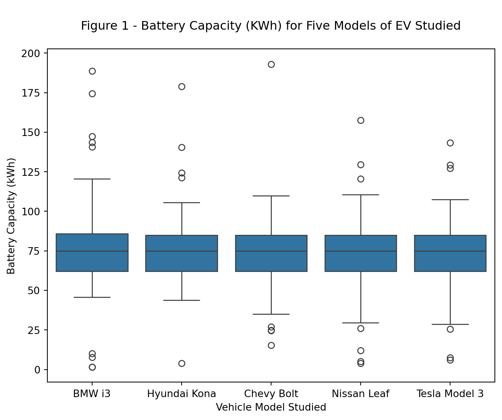
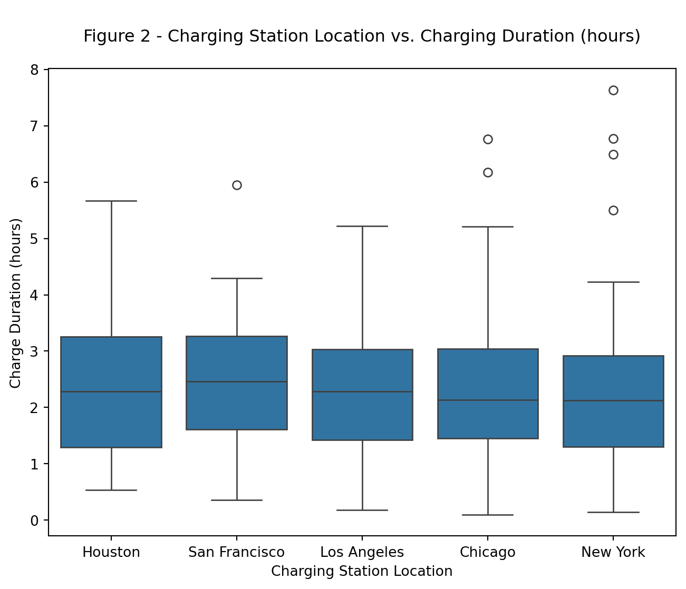
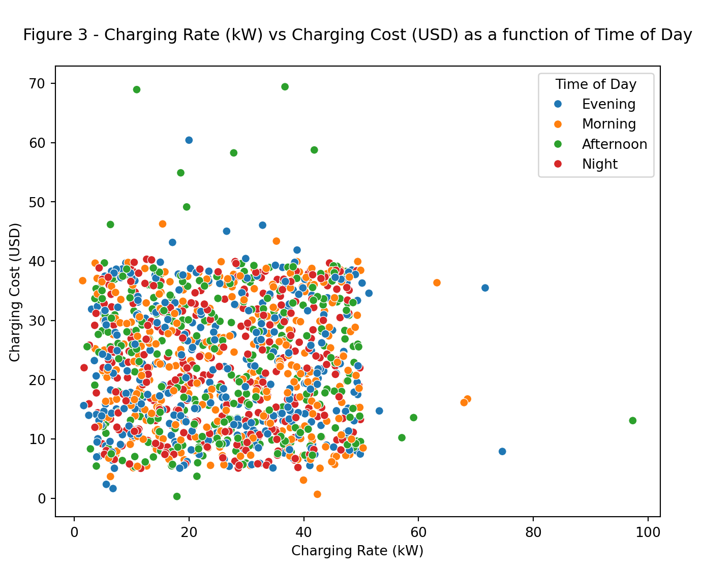
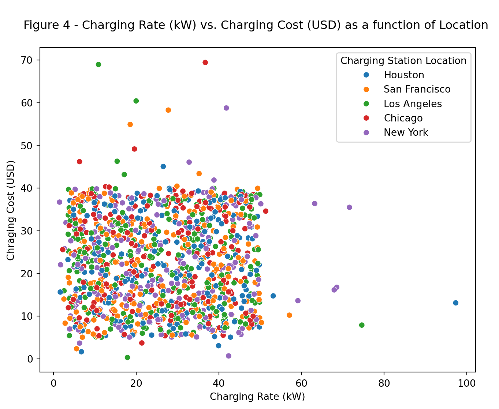
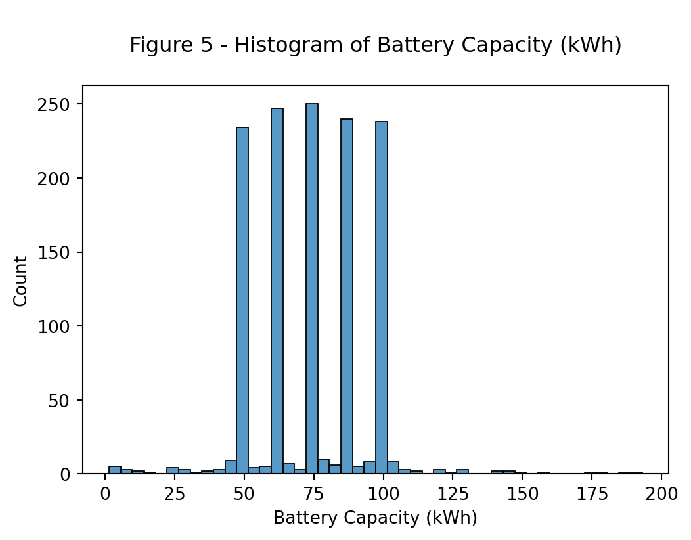
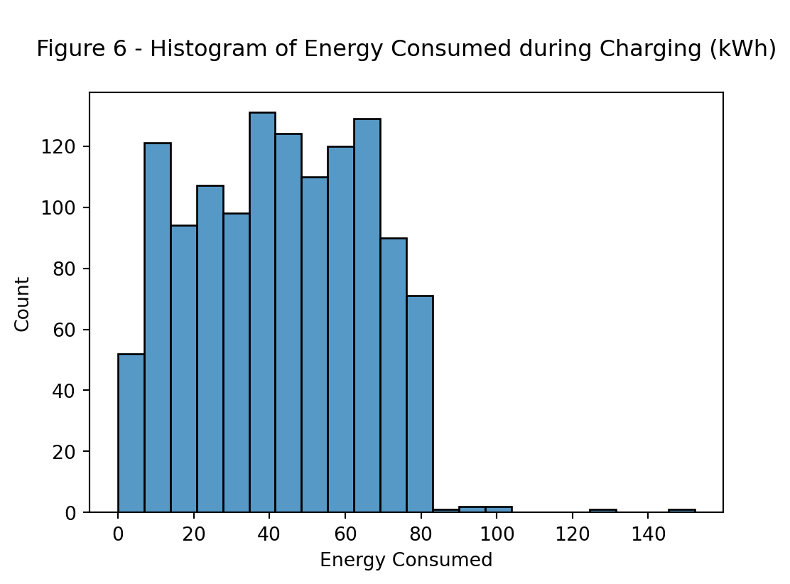
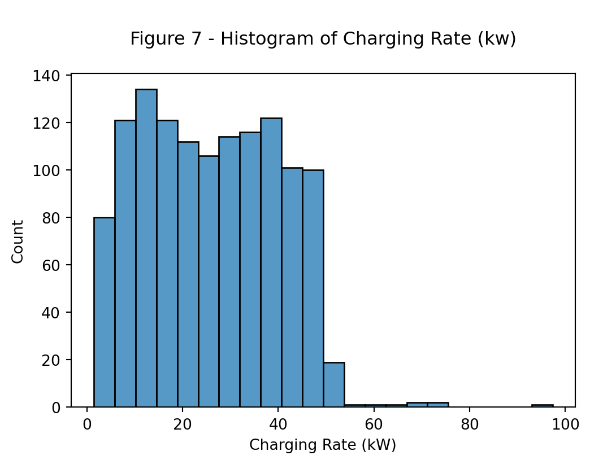
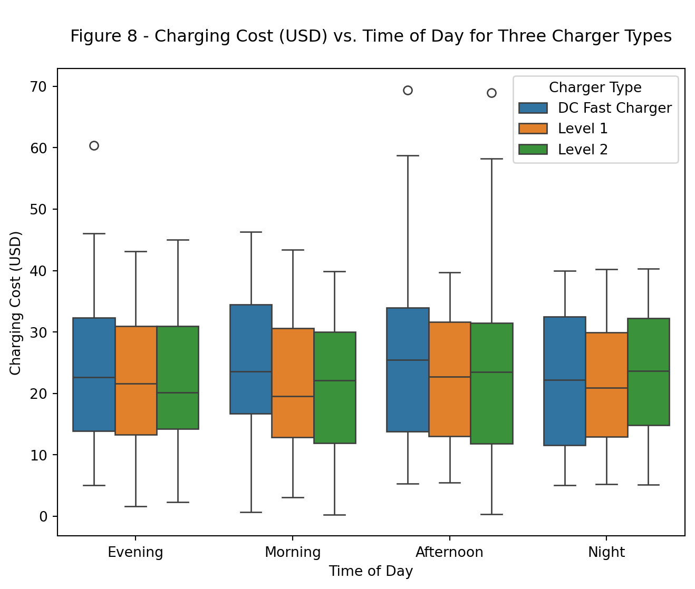
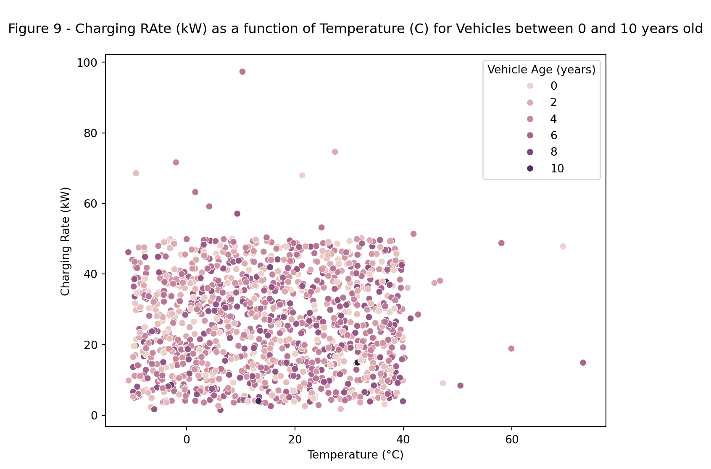
Figure 10 - Seaborn Pair Plot for EV Charging Dataset Variables
<Figure size 576x384 with 0 Axes>Seaborn Pair Plot for EV Charging Dataset Variables

Results
Statistical Review of the Data
A statistical review of the dataset was completed using analysis of variance (ANOVA). ANOVA was selected to complete hypothesis testing where the test is an expansion of the two-sample t-test but allows for the mean of many subgroups to be compared and for differing sample size within each subgroup. The ANOVA assesses variance sum of squares within a subgroup vs. between subgroups.
Each ANOVA includes a boxplot of the subgroups studied and a p-value. The ANOVA null hypothesis (Ho) is that all subgroups have a common mean value (p-value > alpha). The ANOVA alternative hypothesis (Ha) is that at least one subgroup has a unique mean (p-value < alpha). Alpha, the level of significance is typically 0.05 i.e. there is a 5% change of a Type I error - reject Ho when Ho is true - conclude there is a difference in mean when in fact there is no difference.
The first hypothesis test completed was (i) Ho: all vehicle models have the same charging cost vs. Ha: at least one vehicle model has a unique charging cost, see Figure 11. The ANOVA for this hypothesis test yielded a p-value = 0.032, see Figure 11. As a result, Ho is rejected in favor of Ha and we conclude at least one vehicle has a unique charging cost. The ANOVA does not identify which subgroup, vehicle model, has the unique mean and graphically it is not visually apparent what vehicle model is unique, see Figure 11.
The second hypothesis test completed was (ii) Ho: all charging station locations have the same mean charging cost vs. Ha: at least one charging station location has a unique mean charging cost, see Figure 12. The ANOVA yielded a p-value = 0.245 indicating no difference in mean charging cost between charging station locations, see Figure 12.
The third hypothesis test completed examined (iii) Ho: all charger types have the same mean charging cost vs. Ha: at least one charger type has a unique mean charging cost, see Figure 13. The ANOVA yielded a p-value = 0.02 indicating at least one charger type has a unique mean charging cost. Reviewing the boxplot it is not visually apparent what charger type is unique, see Figure 13.
To understand the relationship between charging temperature and charging cost a simple linear regression was completed, see Table 3. The linear regression completes the hypothesis test (iv) Ho: coefficient = 0 vs. Ha: coefficient is not equal to zero. The regression provided an equation for charging cost as a function of temperature, (cost (USD) = 21.7858 + 0.0459 * Temperature(C)), see Table 3. A scatterplot of temperature and charging cost with the linear regression line is provided in Figure 14. The p-value for the regressor coefficient was less than alpha indicating there exists a statistically significant relationship and increasing temperature results in increased charging cost, see Table 3 and Figure 14.
ANOVA was used to understand how (i) vehicle model, (ii) charging station locations, and (iii) charger type had an effect on charging cost. Charging cost appears to be influenced by vehicle model and charger type, see Figures 11 and 13 respectively. The simple linear regression highlighted the relationship between temperature and charging cost. The results of the statistical analysis helped inform the multivariate regression predictive model building efforts.
['BMW i3' 'Hyundai Kona' 'Chevy Bolt' 'Nissan Leaf' 'Tesla Model 3']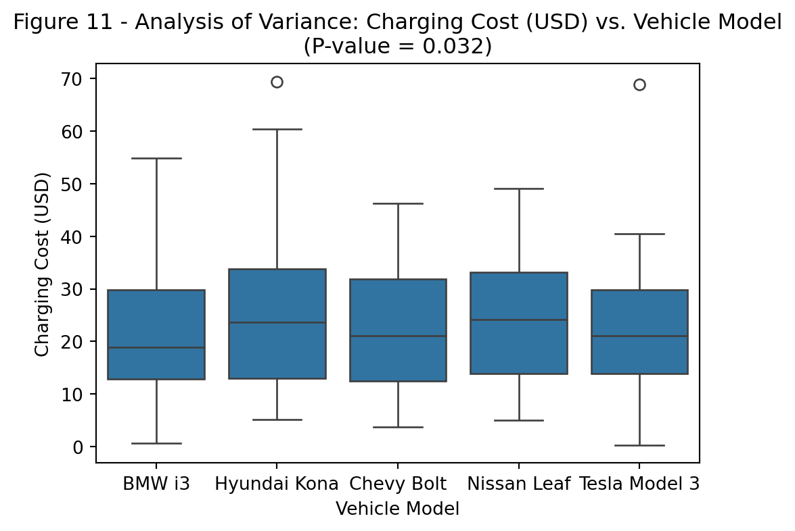
['Houston' 'San Francisco' 'Los Angeles' 'Chicago' 'New York']
P-value: 0.2448970288756026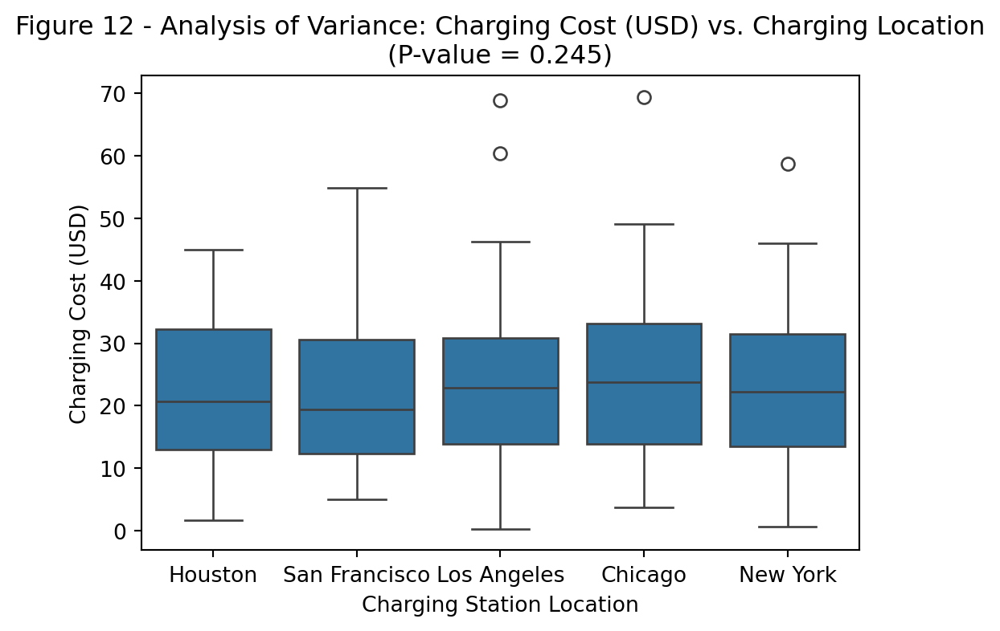
['DC Fast Charger' 'Level 1' 'Level 2']
P-value: 0.022949860885377312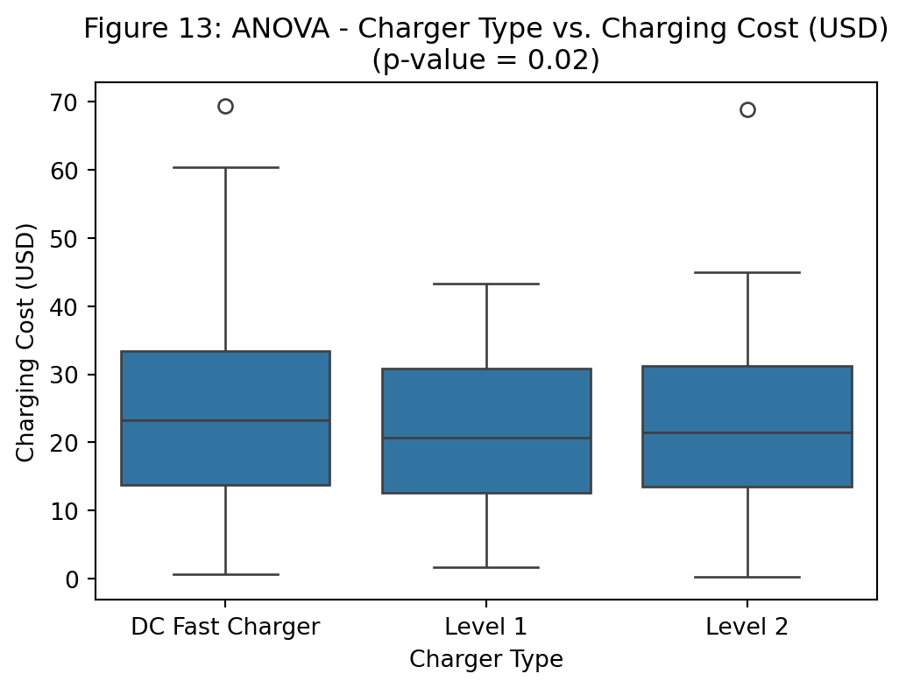
Table 3 - Linear Regression: Charging Cost (USD) as a function of Temperature (C)
OLS Regression Results
===============================================================================
Dep. Variable: Charging Cost (USD) R-squared: 0.004
Model: OLS Adj. R-squared: 0.003
Method: Least Squares F-statistic: 4.461
Date: Mon, 16 Dec 2024 Prob (F-statistic): 0.0349
Time: 18:29:47 Log-Likelihood: -4292.6
No. Observations: 1131 AIC: 8589.
Df Residuals: 1129 BIC: 8599.
Df Model: 1
Covariance Type: nonrobust
====================================================================================
coef std err t P>|t| [0.025 0.975]
------------------------------------------------------------------------------------
const 21.7858 0.462 47.171 0.000 20.880 22.692
Temperature (°C) 0.0459 0.022 2.112 0.035 0.003 0.089
==============================================================================
Omnibus: 33.961 Durbin-Watson: 2.134
Prob(Omnibus): 0.000 Jarque-Bera (JB): 26.027
Skew: 0.279 Prob(JB): 2.23e-06
Kurtosis: 2.510 Cond. No. 30.7
==============================================================================
Notes:
[1] Standard Errors assume that the covariance matrix of the errors is correctly specified.
P-value for Temperature (°C): 0.03489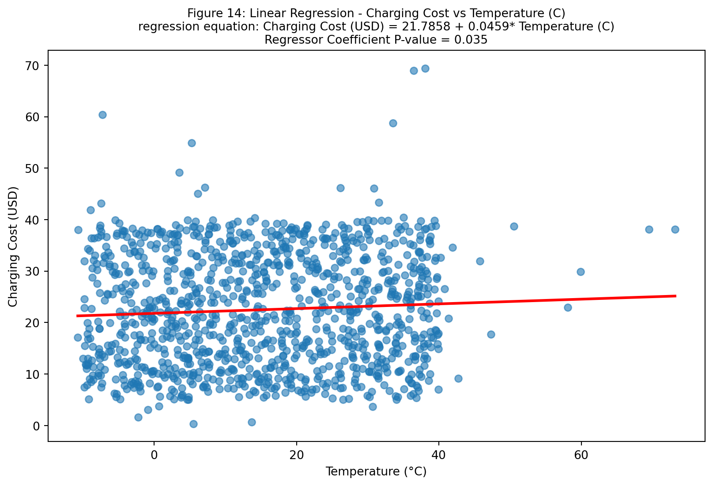
Predictive Model Building
An attempt was made to build a predictive model of charging cost as a function of the factors studied within the dataset using multivariate regression analysis. The multivariate regression analysis was completed in three iterations. The first iteration included all factors in the dataset, see Table 4a and 4b. The second iteration included only those terms that appear to be statistically significant, to improve the R-sq-adjusted value by removing non-significant parameters from the model, see Table 5. The third iteration was a refinement of the regression model, again reducing the number of terms to attempt a model with a high value for R-sq-adjusted, see Table 6.
The initial regression model included all the terms within the EV charging dataset, see Table 4b. The categorical variables were transformed to numerical values using one-hot-encoding, see Table 4b. That first model provided an empirical model of charging cost as a function of all variables studied with an R-sq-adjusted of 0.017 meaning the model explained 1.7% of the variance within the dataset.
To improve the R-sq-adjusted value a majority of the non-significant factors were removed from the model, see Table 5. This second model provided an R-sq-adjusted value of 0.021, that is the model explained 2.1% of the variance within the dataset.
A third multivariate regression model was attempted, again removing non-significant (p-value > 0.05) terms from the model in an attempt to improve R-sq-adjusted by including only statistically significant terms in the model, see Table 6. The third model yielding an R-sq-adjusted = 0.018 - typically an R-sq-adj value greater than 0.7 or 70% is desired.
The results of the multivariate regression analysis were disappointing, none of the model attempts yielded an R-sq-adjusted above 50%. As a result, the support vector regression (SVR) algorithm was attempted to predict charging cost as a function of the other variables or columns in the dataset, see Tables 7, 8 and 9.The initial SVR model included only numerical factors and provided an R-sq-adjusted of -0.25, see Table 7. The second SVM attempt included all factors, numerical and categorical, one-hot-encoding was used to transform categorical factors to numerical, and grid search employed to optimize the RBF kernel hyper-parameters, see Table 8. A third SVM attempt also included all factors and grid search employed to optimize the polynomial kernel, see Table 9. In both SVR’s the data was scaled to ensure a uniform range for each variable studied. However, the second model, even with grid search, yielded a low value for R-sq-adjusted of -0.39 indicating the model was no better than a simple linear regression.
The empirical modeling effort included multivariate regression and support vector regression analysis. Other machine learning algorithms were not attempted because the response, charging cost, was a continues variable and not binary or categorical; as a result, logistic regression nor nearest neighbors were applied. The best performing model was a multivariate regression analysis that included only statistically significant terms and provided an R-sq = 0.041 and R-sq-adjusted = 0.021. The results of the predictive model building were disappointing and may need an expert review to ensure no technical errors in the code were made.
Table 4a - Initial Multivariable Regression Analysis: Charging Cost (USD) MSE and R-squared
Table 4a - Initial Multivariable Regression Analysis: Charging Cost (USD) MSE and R-squared
Mean Squared Error: 126.57
R-squared: -0.03Table 4b - Initial Multivariable Regression Analysis: Charging Cost (USD) Model Summary
Table 4b - Initial Multivariable Regression Analysis: Charging Cost (USD) Model Summary
OLS Regression Results
===============================================================================
Dep. Variable: Charging Cost (USD) R-squared: 0.043
Model: OLS Adj. R-squared: 0.017
Method: Least Squares F-statistic: 1.655
Date: Mon, 16 Dec 2024 Prob (F-statistic): 0.0151
Time: 18:29:48 Log-Likelihood: -4269.8
No. Observations: 1131 AIC: 8602.
Df Residuals: 1100 BIC: 8758.
Df Model: 30
Covariance Type: nonrobust
============================================================================================================
coef std err t P>|t| [0.025 0.975]
------------------------------------------------------------------------------------------------------------
const 27.6761 2.842 9.739 0.000 22.100 33.252
Battery Capacity (kWh) 0.0009 0.016 0.055 0.956 -0.030 0.031
Energy Consumed (kWh) -0.0076 0.014 -0.523 0.601 -0.036 0.021
Charging Duration (hours) 0.2679 0.304 0.880 0.379 -0.330 0.865
Charging Rate (kW) -0.0005 0.023 -0.022 0.982 -0.046 0.045
State of Charge (Start %) -0.0165 0.013 -1.243 0.214 -0.043 0.010
State of Charge (End %) -0.0411 0.019 -2.142 0.032 -0.079 -0.003
Distance Driven (since last charge) (km) 0.0014 0.004 0.372 0.710 -0.006 0.009
Temperature (°C) 0.0488 0.022 2.230 0.026 0.006 0.092
Vehicle Age (years) -0.0663 0.138 -0.479 0.632 -0.338 0.205
Vehicle Model_Chevy Bolt 0.6426 1.037 0.620 0.536 -1.392 2.677
Vehicle Model_Hyundai Kona 2.5749 1.034 2.489 0.013 0.545 4.605
Vehicle Model_Nissan Leaf 2.5322 1.019 2.486 0.013 0.533 4.531
Vehicle Model_Tesla Model 3 1.0139 1.004 1.010 0.313 -0.957 2.985
Charging Station Location_Houston -1.7790 1.034 -1.721 0.086 -3.808 0.250
Charging Station Location_Los Angeles -0.6016 1.016 -0.592 0.554 -2.596 1.392
Charging Station Location_New York -1.2459 1.045 -1.193 0.233 -3.296 0.804
Charging Station Location_San Francisco -2.1057 1.042 -2.021 0.044 -4.150 -0.061
Time of Day_Evening -1.1979 0.899 -1.332 0.183 -2.963 0.567
Time of Day_Morning -0.9523 0.912 -1.044 0.297 -2.743 0.838
Time of Day_Night -1.3616 0.942 -1.445 0.149 -3.210 0.487
Day of Week_Monday -0.7105 1.215 -0.585 0.559 -3.094 1.673
Day of Week_Saturday -0.5143 1.192 -0.431 0.666 -2.854 1.825
Day of Week_Sunday -1.4321 1.198 -1.195 0.232 -3.783 0.919
Day of Week_Thursday 1.3305 1.268 1.049 0.294 -1.158 3.819
Day of Week_Tuesday -1.7839 1.184 -1.506 0.132 -4.108 0.540
Day of Week_Wednesday 0.5948 1.198 0.497 0.619 -1.755 2.945
Charger Type_Level 1 -2.0433 0.778 -2.627 0.009 -3.569 -0.517
Charger Type_Level 2 -1.2791 0.802 -1.596 0.111 -2.852 0.294
User Type_Commuter 0.1571 0.795 0.198 0.843 -1.403 1.717
User Type_Long-Distance Traveler -0.5242 0.807 -0.650 0.516 -2.108 1.059
==============================================================================
Omnibus: 43.971 Durbin-Watson: 2.157
Prob(Omnibus): 0.000 Jarque-Bera (JB): 26.044
Skew: 0.221 Prob(JB): 2.21e-06
Kurtosis: 2.402 Cond. No. 2.01e+03
==============================================================================
Notes:
[1] Standard Errors assume that the covariance matrix of the errors is correctly specified.
[2] The condition number is large, 2.01e+03. This might indicate that there are
strong multicollinearity or other numerical problems.Table 5 - Second Iteration, Statistically Significant Factors, Multivariable Regression Analysis
Table 5 - Second Iteration, Statistically Significant Factors, Multivariable Regression Analysis
OLS Regression Results
===============================================================================
Dep. Variable: Charging Cost (USD) R-squared: 0.041
Model: OLS Adj. R-squared: 0.021
Method: Least Squares F-statistic: 2.035
Date: Mon, 16 Dec 2024 Prob (F-statistic): 0.00277
Time: 18:29:48 Log-Likelihood: -4271.4
No. Observations: 1131 AIC: 8591.
Df Residuals: 1107 BIC: 8712.
Df Model: 23
Covariance Type: nonrobust
===========================================================================================================
coef std err t P>|t| [0.025 0.975]
-----------------------------------------------------------------------------------------------------------
const 27.1726 2.102 12.930 0.000 23.049 31.296
State of Charge (End %) -0.0405 0.019 -2.123 0.034 -0.078 -0.003
Temperature (°C) 0.0467 0.022 2.145 0.032 0.004 0.089
Vehicle Model_Chevy Bolt 0.7493 1.027 0.730 0.466 -1.265 2.764
Vehicle Model_Hyundai Kona 2.6782 1.027 2.607 0.009 0.662 4.694
Vehicle Model_Nissan Leaf 2.6001 1.013 2.568 0.010 0.613 4.587
Vehicle Model_Tesla Model 3 1.0828 0.998 1.085 0.278 -0.875 3.041
Charging Station Location_Houston -1.8020 1.031 -1.749 0.081 -3.824 0.220
Charging Station Location_Los Angeles -0.6514 1.012 -0.644 0.520 -2.637 1.334
Charging Station Location_New York -1.2522 1.040 -1.205 0.229 -3.292 0.788
Charging Station Location_San Francisco -2.0176 1.034 -1.951 0.051 -4.047 0.012
Time of Day_Evening -1.1499 0.895 -1.284 0.199 -2.907 0.607
Time of Day_Morning -0.9250 0.909 -1.017 0.309 -2.709 0.859
Time of Day_Night -1.3318 0.939 -1.418 0.156 -3.174 0.510
Day of Week_Monday -0.7490 1.210 -0.619 0.536 -3.123 1.625
Day of Week_Saturday -0.5816 1.188 -0.490 0.624 -2.912 1.749
Day of Week_Sunday -1.5309 1.192 -1.285 0.199 -3.869 0.807
Day of Week_Thursday 1.2658 1.263 1.002 0.317 -1.213 3.745
Day of Week_Tuesday -1.8306 1.180 -1.551 0.121 -4.146 0.485
Day of Week_Wednesday 0.4830 1.190 0.406 0.685 -1.853 2.819
Charger Type_Level 1 -2.0737 0.776 -2.673 0.008 -3.596 -0.551
Charger Type_Level 2 -1.3212 0.797 -1.657 0.098 -2.886 0.243
User Type_Commuter 0.1675 0.789 0.212 0.832 -1.381 1.716
User Type_Long-Distance Traveler -0.5557 0.803 -0.692 0.489 -2.132 1.020
==============================================================================
Omnibus: 42.005 Durbin-Watson: 2.152
Prob(Omnibus): 0.000 Jarque-Bera (JB): 25.876
Skew: 0.229 Prob(JB): 2.40e-06
Kurtosis: 2.418 Cond. No. 638.
==============================================================================
Notes:
[1] Standard Errors assume that the covariance matrix of the errors is correctly specified.Table 6 - Third Iteration, Statistically Significant Factors, Multivariable Regression Analysis
Table 6 - Third Iteration, Statistically Significant Factors, Multivariable Regression Analysis
OLS Regression Results
===============================================================================
Dep. Variable: Charging Cost (USD) R-squared: 0.030
Model: OLS Adj. R-squared: 0.018
Method: Least Squares F-statistic: 2.503
Date: Mon, 16 Dec 2024 Prob (F-statistic): 0.00163
Time: 18:29:48 Log-Likelihood: -4277.3
No. Observations: 1131 AIC: 8585.
Df Residuals: 1116 BIC: 8660.
Df Model: 14
Covariance Type: nonrobust
===========================================================================================================
coef std err t P>|t| [0.025 0.975]
-----------------------------------------------------------------------------------------------------------
const 26.2434 1.879 13.968 0.000 22.557 29.930
State of Charge (End %) -0.0448 0.019 -2.363 0.018 -0.082 -0.008
Temperature (°C) 0.0480 0.022 2.208 0.027 0.005 0.091
Vehicle Model_Chevy Bolt 0.8166 1.022 0.799 0.424 -1.188 2.821
Vehicle Model_Hyundai Kona 2.7024 1.023 2.641 0.008 0.695 4.710
Vehicle Model_Nissan Leaf 2.5519 1.010 2.526 0.012 0.570 4.534
Vehicle Model_Tesla Model 3 1.0744 0.995 1.080 0.281 -0.878 3.027
Charging Station Location_Houston -2.1081 1.025 -2.056 0.040 -4.120 -0.096
Charging Station Location_Los Angeles -0.8851 1.004 -0.882 0.378 -2.855 1.085
Charging Station Location_New York -1.2028 1.036 -1.161 0.246 -3.235 0.829
Charging Station Location_San Francisco -2.1567 1.034 -2.085 0.037 -4.186 -0.127
Charger Type_Level 1 -2.1236 0.775 -2.740 0.006 -3.644 -0.603
Charger Type_Level 2 -1.3024 0.795 -1.639 0.102 -2.862 0.257
User Type_Commuter 0.1773 0.789 0.225 0.822 -1.370 1.725
User Type_Long-Distance Traveler -0.5135 0.799 -0.642 0.521 -2.082 1.055
==============================================================================
Omnibus: 36.441 Durbin-Watson: 2.144
Prob(Omnibus): 0.000 Jarque-Bera (JB): 24.787
Skew: 0.244 Prob(JB): 4.15e-06
Kurtosis: 2.463 Cond. No. 530.
==============================================================================
Notes:
[1] Standard Errors assume that the covariance matrix of the errors is correctly specified.Table 7 - Support Vector Machine: All Factors with One-Hot-Encoding and Grid Search Linear, RBF, and Polynomial Kernels
Fitting 5 folds for each of 54 candidates, totalling 270 fits
===== Kernel: linear, rbf, poly: Model Summary =====
Best Hyperparameters: {'C': 0.1, 'epsilon': 1, 'gamma': 'scale', 'kernel': 'rbf'}
Performance Metrics:
Mean Squared Error (MSE): 123.44
R² Score: -0.01
Adjusted R² Score: -0.16
Best Estimator:
SVR(C=0.1, epsilon=1)Table 8 - Support Vector Machine: All Factors with One-Hot-Encoding and Grid Search RBF Kernel Hyperparameters
Fitting 5 folds for each of 25 candidates, totalling 125 fits
===== RBF Kernel: Model Summary =====
Best Hyperparameters: {'C': 0.1, 'gamma': 'scale', 'kernel': 'rbf'}
Performance Metrics:
Mean Squared Error (MSE): 126.26
R² Score: -0.03
Adjusted R² Score: -0.19
Best Estimator:
SVR(C=0.1)Table 9 - Support Vector Machine: All Factors with One-Hot-Encoding and Grid Search Polynomial Kernel Hyperparameters
Fitting 5 folds for each of 32 candidates, totalling 160 fits
===== Kernel = Poly: Model Summary =====
Best Hyperparameters:
{'C': 0.1, 'degree': 2, 'gamma': 'scale', 'kernel': 'poly'}
Performance Metrics:
Mean Squared Error (MSE): 125.40
R² Score: -0.02
Adjusted R² Score: -0.18
Best Estimator:
SVR(C=0.1, degree=2, kernel='poly')Discussion
The term project comprised an analysis of an electric vehicle charging dataset, see Tables 1 and 2. The analysis of the dataset, to understand what variables influenced charging cost was completed in stages. First, a graphical assessment of the data was completed, see Figures 1 to 10. Second, a statistical review leveraging analysis of variance (ANOVA) was completed to try and understand or isolated variables that might have an effect on charging cost, see Figures 11 to 14. Next empirical models were created and refined to predict charging cost as a function of the other variables in the dataset, see Tables 1 and 2. The modeling effort included both multivariate regression analysis and support vector machine algorithms. The results of the regression analysis is provided in Tables 4, 5 and 6. The results of the support vector machine algorithms are presented in Tables 7 and 8.
The electric vehicle charging dataset comprised 1320 rows of data and 20 columns. Each row was a charging event with various data documented in the columns, see Tables 1 and 2. The graphical assessment of the dataset did not reveal any obvious trends with respect to charging cost, see Figures 1 to 10.
The statistical analysis of the data was completed using analysis of variance to compare the means across multiple subgroups, see Figures 11, 12, and 13. That work indicated that vehicle type and charger type had an effect on charging cost, or at least one subgroup in each analysis had an unique mean, see Figures 11 and 13 respectively. Temperature was a continuous variable; as a result, simple linear regression was used to determine the relationship between temperature and charging cost, see Table 3. That work indicated temperature did influence charging cost, increasing temperature increased the cost of charging, see Table 3 and Figure 14.
Multivariable regression analysis was used to create predictive models of charging cost as a function of the other variables in the dataset, see Tables 4, 6, and 6. The regression analysis included both continuous numerical variables and categorical variables, the categorical variables were transformed to numerical values using one-hot-encoding. The regression analysis approach was iterative. The first model included all the factors in the dataset and yielded an R-sq-adjusted of 0.017 indicating the model explained 1.7% of the variance in the dataset, see Tables 4a and 4b. Ideally, an R-sq-adjusted > 70% would be preferred for a well performing predictive model. The performance of regression model was improved by removing non-significant terms, see Tables 5 and 6. However, the best performing model had an R-sq-adjusted value of 0.021 or 2.1%.
In an effort to create an improved predictive model the support vector machine (SVM) algorithm was attempted, see Tables 7, 8 and 9. The initial SVM model included only numerical factors to create a predictive model of charging cost; however, that model also yielded a low R-sq-adjusted value of -0.25, see Table 7. To improve the SVM algorithm performance a second attempt was made. That second attempt included both numerical and categorical factors, one-hot-encoding was used to transform categorical factors to numerical, and the RBF kernel implement, see Table 8. The data was scaled using the standard scalar to ensure a uniform range across all factors. To find optimum SVM parameters a grid search was included. Here too the model performed poorly providing an R-sq-adjusted of -0.39 indicating the SVM was no better than linear regression, see Table 8. A third attempt using the polynomial kernel and grid search to optimizes hyper-parameters did not yield improved results, see Table 9. The SVM regression did not perform as well as the multi-variable regression perhaps because the dataset was simply not large enough or the dataset is not well suited to the SVM algorithm.
Conclusions
The ChilePeppers team completed an assessment of an electric vehicle charging dataset. The dataset provided a record of 1320 charging events and recording 20 parameters for each event. The analysis was completed in stages. First a graphical review of the dataset was completed. Then a statistical review was leveraged to complete hypothesis testing using both ANOVA and regression analysis to understand or identify charging factors that influence the charging cost. Next predictive models were attempted to estimate the charging cost as a function of the other parameters in the dataset using both multivariate regression and support vector machine algorithms. The statistical analysis identified vehicle type and charger type as influencing charging cost. The predictive models while yielding empirical models or equations provided algorithms with very low values for R-sq and R-sq-adjusted. The multi-variable regression analysis provided a model with R-squared-adusted = 2.1% and the support vector machine regression algorithm provided a negative value for R-squared-adjusted. Ideally an empirical model would be characterized by an R-squared adjusted greater than 70% indicating the model explains more than 70% of the variance in the dataset. In this example the models are not capable of predicting charging cost as a function of the variables studied.